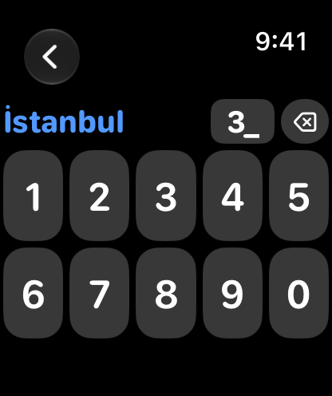
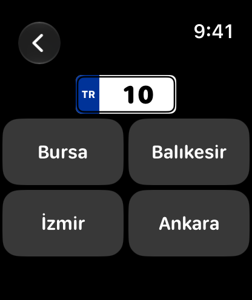
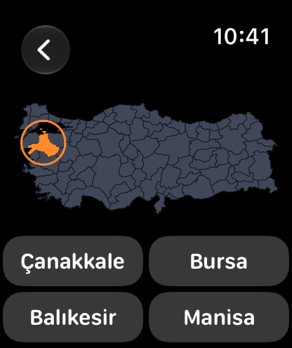
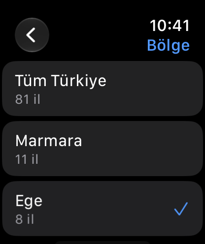

Plaka Watch Special
Learn the license-plate codes of Türkiye's 81 provinces, and where they are on the map, on your wrist. See a province and type its code, see a plate and pick the province, or name the province lit up on the map. Practice all of Türkiye or one region at a time. The right answer after every round. No iPhone needed.
Requires watchOS 8 or later.
Download

Support
Have a question, found a bug, or need help with the app? Reach out. We read every message.
Before you write
A few quick things to try first:
- App not responding? Double-press the Digital Crown to see open apps, then swipe the Plaka card up to close it. Reopen from your app list.
- Some keys are dimmed? That's on purpose. The keypad only allows digits that can still lead to a plate from 01 to 81: no plate starts with 9, 0 can't follow 0, and only 0 and 1 can follow 8.
- Typed 6 and nothing happened? Plates are typed as two digits: 0 then 6 for Ankara. Your answer is checked the moment you type the second digit.
Frequently Asked Questions
- Does it work without my iPhone?
Yes, fully standalone. There is no iPhone app at all. - Which provinces are included?
All 81, from 01 Adana to 81 Düzce. The full list is below. - Can I practice just one region?
Yes. Tap Region on the home screen and pick Marmara, Aegean, Mediterranean, Central Anatolia, Black Sea, Eastern Anatolia or Southeastern Anatolia. All three games then ask only that region's provinces. Your choice is remembered. - Does the same province keep coming up?
No. No province is asked twice until every province in your region (or all 81) has come up. - Is there a time limit?
No. Take as long as you like. After you answer, you see the province and its plate. - Which languages does it support?
Turkish and English. If your watch uses another language, the app opens in Turkish. Province names are shown with their official Turkish names in both. - Which answers count toward stats?
Only questions you answer. Leaving a question without answering adds nothing. - Does it collect any data?
No. Your practice counts stay on your watch and are never sent anywhere.
Manual




City → Plate
- Tap City → Plate. A province name appears.
- Type its code as two digits, for example 0 and 6 for Ankara. Your answer is checked the moment you type the second digit.
- The small Delete (⌫) key at the top removes the last digit.
- Digits that can't lead to a plate are dimmed, so you can't type a number above 81.
Plate → City
- Tap Plate → City. A plate appears.
- Pick the province it belongs to from four choices.
Map → City
- Tap Map → City. A province lights up orange on the map, with a ring around it.
- Pick its name from four. The choices are always its neighbors, so you really need to know where it is.
Region
The Region row on the home screen picks All of Türkiye or one of the seven geographic regions. Questions and choices come from that region, and the map zooms in to it. The keypad still accepts every plate from 01 to 81, so it gives nothing away.
Result
After every answer you see Correct or Not quite, the province and its plate. When you're wrong, you also see which province your answer belongs to, for example You typed 36 Kars. Tap Next for a new question.
Stats
Today and All time show your correct and wrong answers with their percentages. Swipe between four pages: Total, City → Plate, Plate → City and Map → City.
Plate codes
| Plate | Province | Plate | Province | Plate | Province |
|---|---|---|---|---|---|
| 01 | Adana | 28 | Giresun | 55 | Samsun |
| 02 | Adıyaman | 29 | Gümüşhane | 56 | Siirt |
| 03 | Afyonkarahisar | 30 | Hakkari | 57 | Sinop |
| 04 | Ağrı | 31 | Hatay | 58 | Sivas |
| 05 | Amasya | 32 | Isparta | 59 | Tekirdağ |
| 06 | Ankara | 33 | Mersin | 60 | Tokat |
| 07 | Antalya | 34 | İstanbul | 61 | Trabzon |
| 08 | Artvin | 35 | İzmir | 62 | Tunceli |
| 09 | Aydın | 36 | Kars | 63 | Şanlıurfa |
| 10 | Balıkesir | 37 | Kastamonu | 64 | Uşak |
| 11 | Bilecik | 38 | Kayseri | 65 | Van |
| 12 | Bingöl | 39 | Kırklareli | 66 | Yozgat |
| 13 | Bitlis | 40 | Kırşehir | 67 | Zonguldak |
| 14 | Bolu | 41 | Kocaeli | 68 | Aksaray |
| 15 | Burdur | 42 | Konya | 69 | Bayburt |
| 16 | Bursa | 43 | Kütahya | 70 | Karaman |
| 17 | Çanakkale | 44 | Malatya | 71 | Kırıkkale |
| 18 | Çankırı | 45 | Manisa | 72 | Batman |
| 19 | Çorum | 46 | Kahramanmaraş | 73 | Şırnak |
| 20 | Denizli | 47 | Mardin | 74 | Bartın |
| 21 | Diyarbakır | 48 | Muğla | 75 | Ardahan |
| 22 | Edirne | 49 | Muş | 76 | Iğdır |
| 23 | Elazığ | 50 | Nevşehir | 77 | Yalova |
| 24 | Erzincan | 51 | Niğde | 78 | Karabük |
| 25 | Erzurum | 52 | Ordu | 79 | Kilis |
| 26 | Eskişehir | 53 | Rize | 80 | Osmaniye |
| 27 | Gaziantep | 54 | Sakarya | 81 | Düzce |
Legal
Map data
Province borders come from Natural Earth (public domain).
Privacy Policy
Last Updated: October 2026
Introduction
Welcome to Plaka Watch Special. We are committed to respecting and protecting your privacy. This Privacy Policy outlines the type of information we collect, or in this case, do not collect, and the methods we use to ensure your privacy.
Information We Do Not Collect
Plaka Watch Special is designed on a principle of zero data collection. We do not collect, store, use, share, or transfer any personal data from our users. The app operates entirely on your Apple Watch with no data processed or stored on any server.
The app keeps only your practice counts on your watch (correct and wrong answers for today and all time). They are stored only on the watch, are never sent anywhere, and are deleted when you remove the app.
The app has no internet access, no user accounts, no analytics, no advertising, and no third-party code.
Third-Party Services
Plaka Watch Special does not integrate with any third-party services, such as analytics tools, advertising networks, or social media platforms. No data is shared with any third party.
Children's Privacy
Since we do not collect any data, we comply with all relevant regulations concerning children's privacy, such as the Children's Online Privacy Protection Act (COPPA).
Changes to This Policy
We may update our Privacy Policy from time to time. We advise you to review this page periodically for any changes. Changes are effective immediately after they are posted on this page.
Contact Us
If you have any questions or suggestions about our Privacy Policy, do not hesitate to contact us at support [at] hoshinosoftware [dot] com